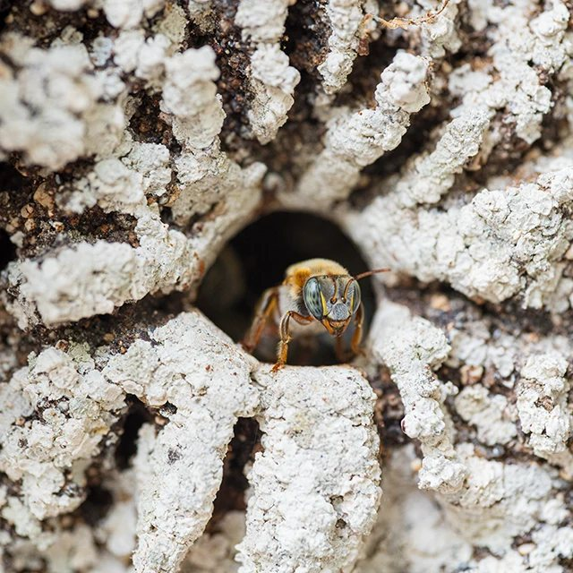
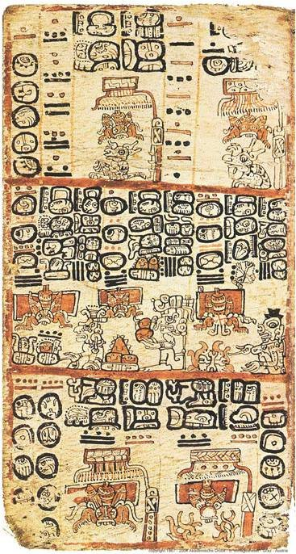
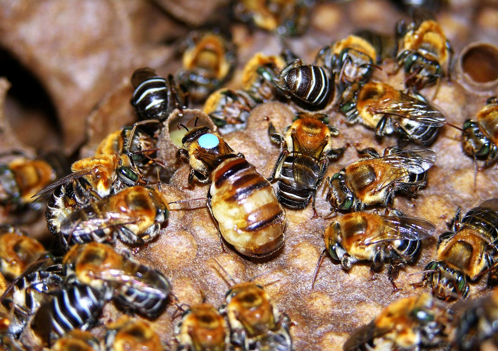
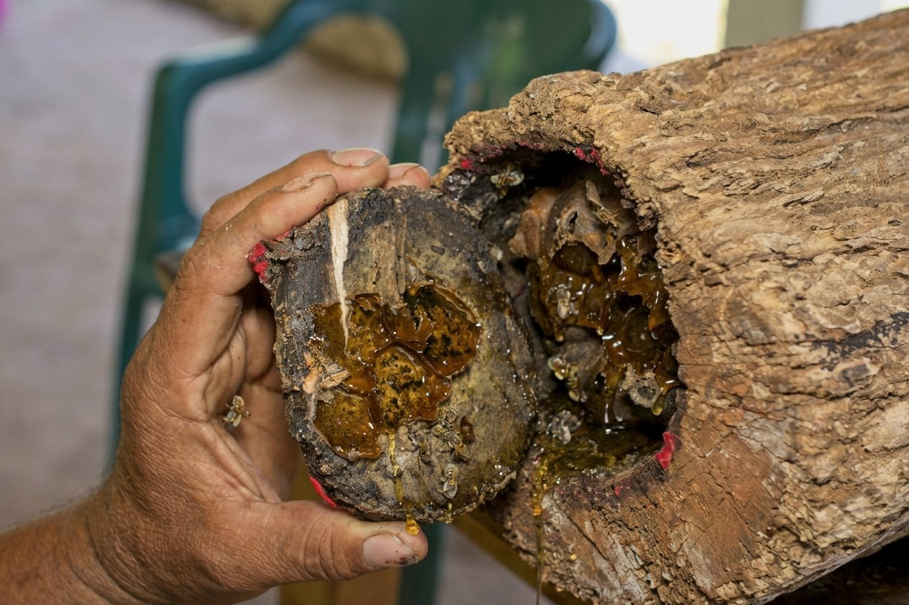
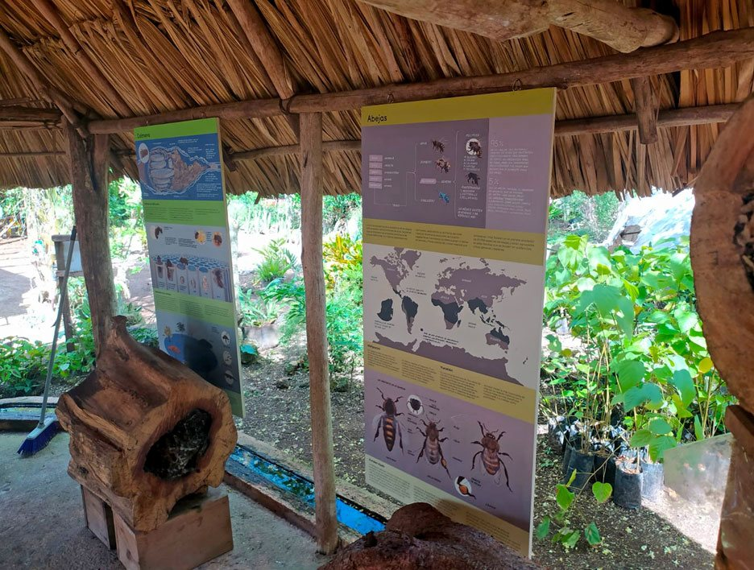
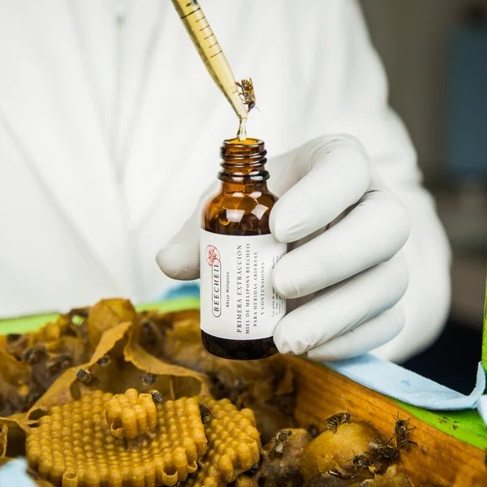
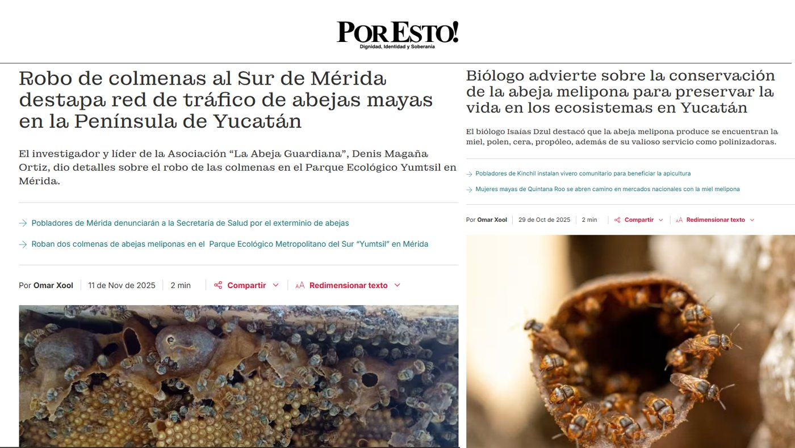

Xunáan Kaab: la abeja maya que no pica
Antes de hablar de sensores, plataformas o pasaportes digitales, conviene conocer a quien todo esto busca proteger. Esta página reúne, en lenguaje claro, lo que aprendimos de testimonios públicos de meliponicultores, de la literatura científica y de la prensa: qué es esta abeja, cómo vive, cómo se cuida, qué lugar ha tenido en la comunidad maya y qué amenazas enfrenta hoy.
No es un tratado académico ni un manual de manejo. Es un mapa de lo que sabemos, con las fuentes a la vista y las dudas señaladas donde las hay.
¿Qué es Melipona beecheii?
Melipona beecheii es una abeja nativa sin aguijón de la península de Yucatán y de parte de Centroamérica. En lengua maya se le llama Xunáan Kaab —“la señora abeja” o “la dama abeja”— y también Colel Cab. Los meliponicultores con quienes hablamos la describen como la más grande de las abejas sin aguijón de la región.
“Sin aguijón” es literal: no pica. Pero no todas las abejas sin aguijón se comportan igual. Algunas especies vecinas, como Scaptotrigona pectoralis —que varios meliponicultores de Quintana Roo también crían—, son defensivas y muerden, sobre todo cerca de los ojos; por eso se cosechan con velo. Xunáan Kaab, en cambio, es dócil.
La abeja europea (Apis mellifera) llegó con los españoles y es otra especie, con otra biología: produce mucha más miel, pero su nido, su miel y su manejo son distintos. Una colonia de Melipona rinde alrededor de uno a uno y medio kilos de miel al año en un meliponario urbano, y hasta cuatro o cinco en selva, según un meliponicultor de Cancún. Lo que sirve para una —técnicas, atrayentes, incluso sensores— no se traslada tal cual a la otra.

Una historia muy antigua
El manejo de esta abeja quedó registrado en el Códice Trocortesiano (o Códice de Madrid), uno de los pocos libros mayas que sobrevivieron. Un especialista entrevistado lo describe como un manual de meliponicultura de alta especialización, y hace notar algo curioso: no retrata la cosecha de la miel, sino la reproducción de las colmenas —cómo dividirlas y cómo evaluar la cría para saber si la colonia está lista—.
¿Cuánto tiempo lleva esta relación? Las fuentes no coinciden, y conviene decirlo. En los materiales que revisamos, la antigüedad del manejo maya de esta abeja va de “más de mil años” a “más de tres mil”, y algunos meliponicultores hablan de milenios más. Un especialista afirma que las evidencias lingüísticas indican que se le crió antes que la cerámica y la agricultura. Son afirmaciones de distinto alcance: aquí las presentamos como las cuentan quienes las sostienen, no como fechas establecidas.
Lo que sí aparece una y otra vez es la escala. Meliponicultores que citan a Fray Diego de Landa cuentan que cada pueblo importante llegó a tener de tres mil a cinco mil colmenas, y en Quintana Roo se habla de un gremio de productores entre Cozumel, Tulum y Cobá.
Luego llegó Apis mellifera. Con los españoles, la abeja europea —más productiva— fue desplazando el uso de Xunáan Kaab. Aun así, las técnicas tradicionales sobrevivieron en algunas comunidades: todavía se cosecha con jícaras y varitas para picar los cántaros de miel, un procedimiento que, según los especialistas, guarda un parecido notable con lo que describen las fuentes antiguas.

La colonia por dentro
En la selva, Xunáan Kaab anida en cavidades de árboles viejos y huecos, en selvas medianas y bajas. Todo el nido —cría, miel, polen— queda dentro de la cavidad; hacia afuera solo hay una entrada pequeña, vigilada por abejas centinela. Un meliponicultor la compara con una madre que lleva todo dentro de sí.
La miel y el polen no se guardan en panal, sino en cántaros o potes de cerumen —una mezcla de cera y propóleo— separados de la cría, que sí vive en discos de panal. Según un meliponicultor de Cancún, cuando un cántaro se llena las abejas le añaden polen y lo cierran con una burbuja de aire; tras unos cuatro a seis meses de maduración lo vuelven a abrir y lo sellan sin aire. Es un proceso lento, que él compara con la crianza del vino.
La miel de Melipona es más húmeda y más líquida que la de Apis: un documental sobre meliponicultura habla de un 20 a 25 % de humedad, frente a 18 % o menos en la miel europea. Su sabor cambia según el árbol que esté floreando: en un mismo jobón se han probado cántaros con sabores muy distintos, y hay quien describe una miel “a chocolate blanco” cuando las abejas visitan la guaya.
Una colonia madura reúne, según un meliponicultor de Cancún, entre cinco y seis mil abejas. Tiene además hábitos que sorprenden: designa un rincón para sus excretas y lo mantiene aparte del resto del nido.
Sobre la reina hay un detalle técnico que un video de meliponicultura recoge: en las abejas sin aguijón del género Melipona no se distinguen “celdas reales” de mayor tamaño, como ocurre en otros géneros; las reinas nacen en celdas parecidas a las demás. Un meliponicultor tradicional agrega que una reina fecundada puede poner huevos durante años.

Cuidados: jobón y caja
El jobón. Es un tronco hueco, de unos 50 a 55 centímetros de largo y un hueco interior de unos 14 a 18 centímetros. Los meliponicultores que lo elaboran buscan maderas duras de la región —yaxnic, caracolillo, zapote— que duren generaciones, y árboles viejos y ya sin función que tengan hueco de forma natural. El tronco se seca alrededor de un año antes de recibir a las abejas. Por fuera se sella con tierra roja (kancab) y por dentro las propias abejas lo recubren de propóleo. Se coloca horizontal, calzado para que no ruede.
La caja tecnificada. Separa el nido (la cría) del alza (donde se guarda la miel), de modo que se puede cosechar sin tocar la cría. Sus paredes son gruesas —alrededor de una pulgada o más— porque esta especie necesita aislarse bien para regular su temperatura. Una fuente especializada da como referencia unos 18 × 18 × 40 cm de cámara de cría, una piquera de 1.5 cm y un alza de 9 cm; conviene confirmar las medidas con un meliponicultor antes de construir.
Multiplicar colonias. Se hace en pocos momentos del año: un meliponicultor de Maní divide en octubre, con la luna llena de enero y en abril, y cosecha una sola vez, en primavera. La idea es tomar discos de cría madura y abejas nodrizas de colonias fuertes y llevarlos a una casa nueva. Un video técnico llama a esto “división por mínima perturbación”: mover cajas o discos con el menor manejo posible del nido.
Los primeros meses. Una colonia recién dividida es frágil. Requiere unos dos meses de atención: abrir y cerrar cada dos o tres días, alimentarla, y proteger el nido de moscas. En meliponarios húmedos se coloca una trampa con vinagre de manzana para los fóridos (la “mosquita vinagrera”, nenem en maya). Cuando falta floración se alimenta con miel de Apis —nunca con azúcar, advierte un meliponicultor tradicional— y con polen. Aun con experiencia, no todas prenden: de unas 40 divisiones, es normal perder tres o cuatro.
De principio a fin, entre curar el tronco, dividir y esperar a que la colonia madure, pueden pasar unos dos años y medio antes de la primera cosecha, según un meliponicultor de Cancún.

La comunidad, ayer y hoy
Ayer. Documentos de los siglos XVI y XIX muestran que las colmenas y los colmenares se heredaban como parte del patrimonio de una familia. Cuidar Xunáan Kaab era, además, un compromiso simbólico y ritual.
El punto más bajo. Hace unos 25 años, cuenta Luis Armando Quintal Medina, meliponicultor de Maní, apenas quedarían unos 500 jobones en Yucatán: los dueños no los vendían porque eran herencia de sus abuelos, y otros ya no sabían manejarlos. Él compró treinta y empezó a rescatar el oficio junto con una escuela de agricultura ecológica; hoy cuida unas 400 colmenas.
Hoy. Conviven las cajas tecnificadas —cada vez más comunes por lo fáciles que son de manejar— y los jobones, que se mantienen por identidad y tradición. Una meliponicultora explica que prefiere la caja porque, por una condición física, no puede cargar un jobón. Grupos de mujeres crían abejas y elaboran derivados de miel, polen y propóleo; uno de ellos pasó en dos años de veinte integrantes a once. En Cancún, un programa de rescate y adopción, Padrinos, retira colonias de zonas que van a ser deforestadas y las entrega a familias capacitadas: hoy suma más de 80 familias y más de 300 colonias. Los meliponicultores también visitan escuelas para que los niños conozcan la abeja.
Las instituciones han empezado a mirarla. En Mérida existe un banco de germoplasma en el Parque Ecológico Metropolitano del Sur (Yumtsil), creado desde 2018 para conservar la diversidad genética de la especie, y en 2025 Yucatán declaró a la melipona patrimonio biocultural del estado. Un diagnóstico estatal consultado contó 87 productores en 24 municipios.

Miel, propóleo y ceremonia
La miel. Es escasa y por eso cara: directa del productor se vende entre 800 y 1,200 pesos el litro, y las mieles más raras pueden pasar de 3,000. Se cosecha una vez al año, y solo el excedente del alza; lo demás es alimento de la colonia. Algunos cocineros han empezado a usarla en platillos y postres.
El propóleo. Son resinas de árboles que las abejas recolectan y transforman; sellan con ellas la entrada del nido y mezclan con cera para construir sus cántaros. Los meliponicultores lo maceran en alcohol para elaborar tinturas, jabones y cremas de uso tradicional.
La ceremonia. La miel de Xunáan Kaab tiene un lugar ritual. Con ella se elabora el balché, la bebida ceremonial de los mayas, hecha con agua de cenote, miel de esta abeja y corteza del árbol de balché; también se preparan tamales dulces que solo se comen en contextos colectivos y ceremoniales. En Maní, una ceremonia de agradecimiento y petición de lluvias, con ofrendas, se realiza cada último sábado de octubre, y se ha ido recuperando año con año.
Los meliponicultores atribuyen a la miel y al propóleo usos tradicionales: para los ojos, la garganta, las heridas y la piel. Son saberes de la tradición. En este sitio no los presentamos como evidencia clínica ni como recomendación médica.

Los retos que enfrenta
Pérdida de hábitat. Las abejas anidan en árboles viejos, y esos árboles son los primeros en caer cuando la selva se convierte en fraccionamientos, hoteles o cultivos mecanizados. Un meliponicultor de Cancún cuenta que en su región hay 16 especies de abejas nativas afectadas por la deforestación. La narración divulgativa “El vuelo silencioso de Xunan Kab” apunta también a la especulación inmobiliaria y al turismo masivo.
Agroquímicos. Apicultores de Hopelchén, Campeche, cuentan cómo la agricultura industrial —con soya, plaguicidas y pozos de riego— presiona a la miel y a las abejas. En marzo de 2023, según los ponentes de un protocolo para documentar estos casos, murieron alrededor de 3,365 colmenas de 80 apicultores, y 16 muestras analizadas resultaron positivas a fipronil. Son cifras reportadas por quienes presentaron el protocolo; atribuir una causa exige análisis de laboratorio.
Calor extremo. En 2024, una ola de calor eliminó a la mitad de las colmenas del banco de germoplasma de Yumtsil.
Robo y tráfico. De las cuatro colmenas que sobrevivieron, dos fueron robadas. Hay una carpeta de investigación abierta en la Fiscalía y los investigadores temen que formen parte de un mercado ilegal detectado en redes sociales. No eran colmenas reemplazables: eran el resultado de siete años de cruzas.
Diversidad genética. Con la selva fragmentada, las colonias ya no pueden dispersarse ni cruzarse de forma natural; los meliponicultores terminan multiplicando la misma colmena, y con el tiempo se pierde variabilidad. Un especialista advierte que dividir siempre las mismas pocas colonias produce consanguinidad.
Pérdida de saberes. Muchos meliponicultores tradicionales son personas mayores, a veces monolingües, sin nadie a quien enseñar. Hay colmenares que se abandonan cuando muere el dueño, porque los herederos saben que es un compromiso ritual pero no cómo se maneja.
Manos que no alcanzan. Cuando un programa entrega cientos de colonias a familias que apenas están aprendiendo, los meliponicultores expertos no pueden visitarlas todas en sus semanas más frágiles.
Todos estos retos comparten algo: ocurren entre una visita y la siguiente, cuando nadie está mirando. Xunaka busca hacer visible ese intervalo, sin reemplazar el conocimiento de quien cuida la colonia.

Marco legal y lo que sigue
Estatus. Hoy Melipona beecheii no está incluida en la NOM-059-SEMARNAT, la lista oficial de especies en riesgo, aunque una fuente especializada señala que se desconoce el estado real de sus poblaciones silvestres.
Un proceso en curso. La Suprema Corte de Justicia de la Nación analiza el Amparo en Revisión 790/2025, que propone reconocer a las abejas —entre ellas la melipona— como sujetos de derechos; uno de los ministros propuso incluirla en el catálogo oficial de especies en riesgo. Al momento de escribir esto, el asunto seguía pendiente.
Manejo responsable. En México, las Unidades de Manejo para la Conservación de la Vida Silvestre (UMA) son el mecanismo previsto para criar y aprovechar fauna silvestre nativa de forma ordenada. Por eso Xunaka se diseña, desde ahora, con prácticas equivalentes: colonias que provienen de división de colonias sanas, nunca de captura destructiva en la selva.
Un precedente. En Quintana Roo existe una Indicación Geográfica para la “Miel de Abeja Melipona del Corredor de la Zona Maya”, en los municipios de Felipe Carrillo Puerto, José María Morelos y Tulum. No aplica a Yucatán, pero muestra que la trazabilidad de la miel puede convertirse en un instrumento institucional.
Glosario
Las palabras que más aparecen en la conversación sobre esta abeja.
- Jobón
- Tronco hueco, de unos 50 a 55 cm, donde se cría la abeja de forma tradicional.
- Meliponicultura / meliponario
- El oficio de criar abejas sin aguijón (melipona, tribu Meliponini) y el lugar donde se tienen las colmenas.
- Xunáan Kaab
- “La señora abeja” o “la dama abeja”; nombre maya de Melipona beecheii. También Colel Cab.
- Kancab
- Tierra roja con la que se sella tradicionalmente el jobón.
- Piquera
- La entrada del nido, por donde salen y entran las abejas.
- Cántaro o pote
- Recipiente de cerumen donde la abeja guarda y madura la miel y el polen.
- Cerumen
- Mezcla de cera y propóleo con la que las abejas sin aguijón construyen su nido.
- Propóleo
- Resina de árboles que las abejas recolectan y usan para sellar y proteger el nido.
- Geopropóleo
- Mezcla de propóleo y tierra que usan algunas abejas sin aguijón.
- Nido y alza
- En una caja tecnificada, la cámara de cría (nido) y el compartimento superior de la miel (alza).
- División
- Multiplicar una colonia repartiendo cría y abejas en una casa nueva.
- Fórido
- Mosca que ataca colonias débiles o recién divididas; en maya, nenem.
- Balché
- Bebida ceremonial maya fermentada, hecha con agua de cenote, miel y corteza de balché.
- Banco de germoplasma
- Colección viva que conserva la diversidad genética de una especie.
- Consanguinidad
- Pérdida de variabilidad genética por cruzar individuos emparentados.
- UMA
- Unidad de Manejo para la Conservación de la Vida Silvestre: esquema mexicano de cría y aprovechamiento ordenado de fauna nativa.
Y ahora, ¿qué hace Xunaka?
Con este contexto, el resto del sitio se entiende mejor.
Sobre las fuentes. Esta página se armó con testimonios de meliponicultores de Yucatán y Quintana Roo, un documental de divulgación, un protocolo de documentación de mortandad de abejas, notas de prensa sobre el banco genético de Yumtsil, literatura científica sobre feromonas de Melipona beecheii y material legal público. Las afirmaciones medicinales y las fechas de origen se citan como testimonio, no como hecho comprobado.